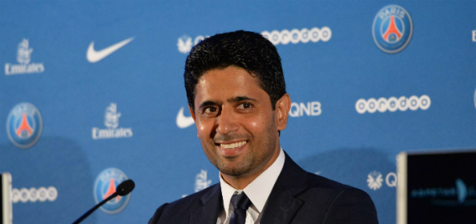

Met groot genoegen nodig ik u uit voor voetbal evenement is georganiseerd om onze samenwerking te vieren! We hebben een vullend programma met daarin vele voetbalsters, waarvan ik weet dat ze bij u in de smaak zullen vallen. Enkele voetbalsters die zullen optreden zijn Verratti, Cavani en Di Maria. Aan het einde van de middag zal er een wedstrijd worden georganiseerd. Wij horen graag van u of u interesse heeft om aan deze feestgevulde middag deel te nemen! Het volledige programma en de routebeschrijving van het evenement is bij deze uitnodiging gevoegd. Wij hopen u op 23/12/2016 te mogen begroeten!
De Geschiedenis van PSG
Paris Saint-Germain, ook wel bekend als PSG, is een Franse betaaldvoetbalclub, gevestigd in de Franse hoofdstad Parijs. De in 1970 opgerichte fusieclub komt uit in de Ligue 1 en speelt zijn thuiswedstrijden in Parc des Princes. De traditionele uitrusting van Paris Saint-Germain bestaat uit een blauw en rood tenue. PSG speelt sinds 1974 onafgebroken in de hoogste klasse, langer dan elke andere club in de Ligue 1. In 2011 kwam de club in handen van Qatar Sports Investments, dat de vereniging financieel ondersteunt.
Voorzitter van Paris SG

PDG: Nasser Al-Khelaïfi